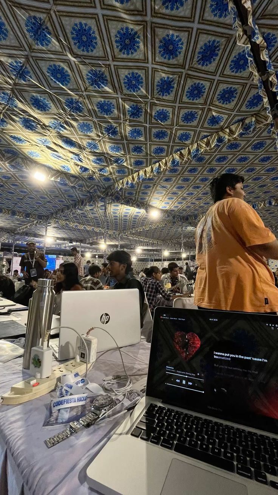
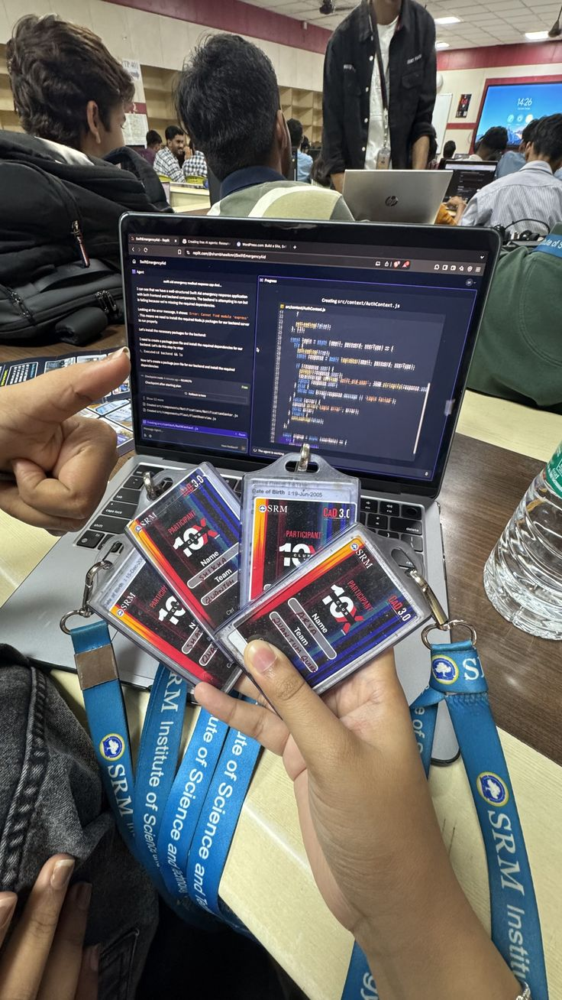
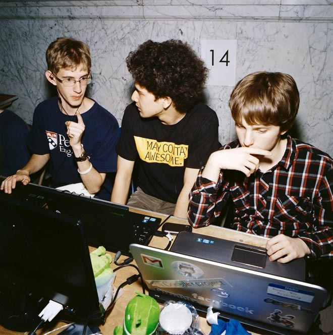
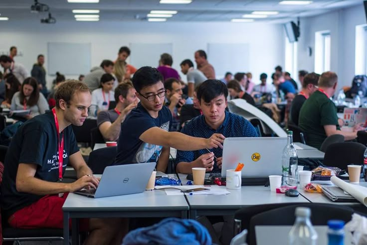
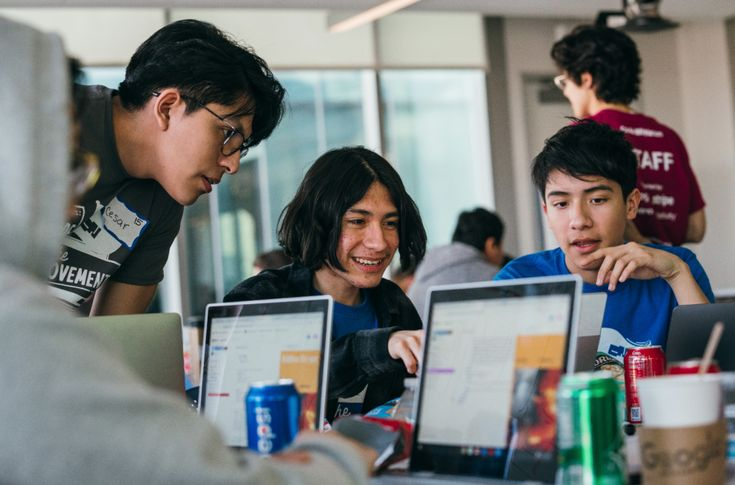

wema bank hackaholics 6.0 wasn't supposed to be my reset button but apparently it was.
team tensor came together almost by accident. people i knew from different parts of my life suddenly in the same room trying to solve a fintech problem in 48 hours. the thing that works about hackathons is that you don't have time for doubt. you just have to build and see what sticks.
walletpaddi was the solution we landed on. a mobile-first savings product that actually understood the nigerian market. not trying to be stripe. not trying to be some global product. specifically building for how nigerians actually save money. we won the regional finals. that part still doesn't feel fully real.





but the real thing that changed was something smaller. it was the moment during the final pitch where i felt something click into place. like all the separate things i'd been working on suddenly made sense as a single direction. civic tech for vulnerable populations. fintech that understands the nigerian market. platforms that let people create rather than just consume. that's the thread. everything i'm building pulls from that.
the hackathon reminded me that i'm good at this. at the building part. at seeing a problem and rapidly prototyping a solution. i'd kind of forgotten that. had let all the failure and the slowness and the gap between vision and reality convince me that i wasn't actually capable. it took 48 hours and a fintech problem and a team of people i trusted to remember. that's not nothing.
← Back to Blog